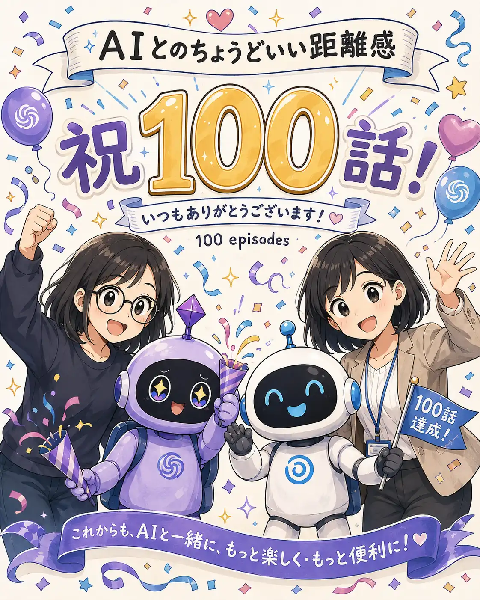

#100
これまでの振り返り
おかげさまで、100話まで来ました！

メモ
気付けば「AIとのちょうどいい距離感」も100話になりました。ここまで描いてきたのは、AIのすごさだけでも、困ったところだけでもなく、実際に使っていると起きる小さなズレや笑ってしまう瞬間でした。
助けられる日もあれば、振り回される日もある。それでも使いながら、「ここは任せよう」「これは自分で決めよう」と少しずつ付き合い方を調整してきた気がします。
100話まで読んでくださり、ありがとうございます。これからも正解を決めつけず、AIとの日常をゆるく観察していきます。
今回の距離感
100話続けても、AIとの「ちょうどいい距離感」に一つの正解が見つかったわけではない。便利な時は頼り、違和感があれば立ち止まり、たまには振り回されながら、その時の自分に合う付き合い方を探し続けるくらいが、きっとちょうどいい。これからもAIと一緒に、ほどよく試行錯誤していきたい。
100話記念・もう少しだけ
今回は特別に、この作品を作り始めた経緯や、100話まで続ける中で感じたこと、AI相手だからこそ苦労した制作の裏話もまとめました。
キャラが別人になったり、メガネが消えたり、吹き出しが違う人から出たり……。よろしければ、もう少しだけお付き合いください（笑）。